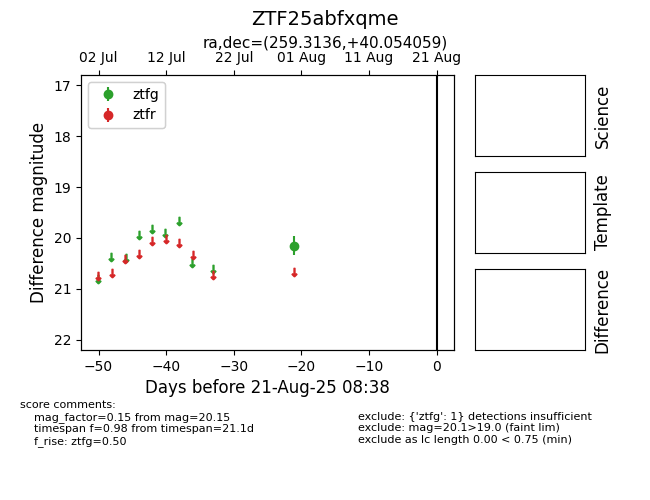

Target ZTF25abfxqme at 2025-08-21 08:38, see:
FINK: fink-portal.org/ZTF25abfxqme
Lasair: lasair-ztf.lsst.ac.uk/objects/ZTF25abfxqme
ALeRCE: alerce.online/object/ZTF25abfxqme
alt names
ZTF25abfxqme (ztf,alerce)
coordinates:
equatorial (ra, dec) = (259.3136,+40.05406)
galactic (l, b) = (64.6261,+34.44192)
photometry
last ztfg=20.15
1 ztfg detections
